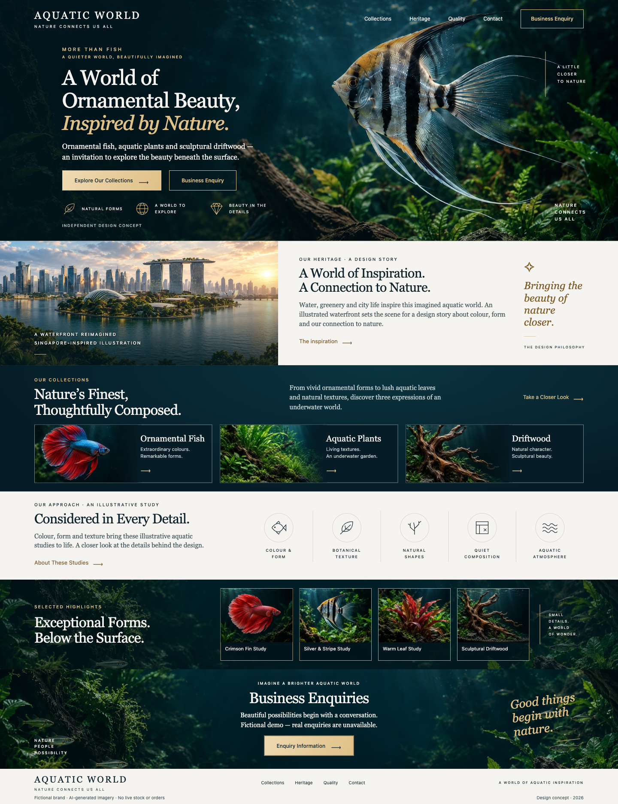

查看原始设计参考
两轮均使用相同的设计文件和九张独立图片。参考图包含绘制的浏览器外框；实际网页没有实现外框。素材包与原图照片并非逐像素相同，比较重点是布局、裁切与融合方式。

第一轮原稿保持不变，第二轮代码在独立目录。相同权重的评分属于非盲评判断；两个 CLI 的权限、工具和默认推理设置不同，Claude 每轮均使用一次内置 advisor。Codex 第二轮通过连接的 Chrome 完成了更多自检，反馈效果无法单独分离。两份第二版的独立检查通过，但未检查 Safari、Firefox、真实设备、读屏、200% 缩放或完整无障碍审计。